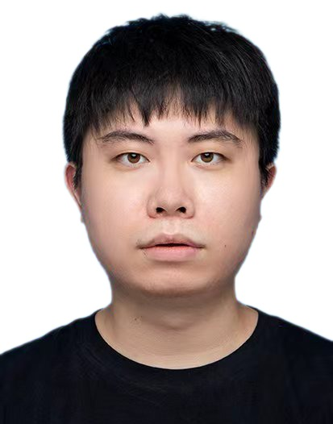

|

|
Mingkai Zheng
Assistant Professor
Department of Computer Science and
Engineering
Southern University of Science and
Technology
|
I am currently an Assistant Professor in the Department of Computer Science and Engineering at Southern
University of Science and Technology (SUSTech). I received my Ph.D. in Computer Science from the School of
Computer Science at the University of Sydney in 2025, advised by Prof. Chang Xu. During my Ph.D., I had the
honor of being advised by Prof. Samuel Albanie during a research visit to the University of Cambridge. Prior
to my Ph.D., I received my Bachelor's degree from the University of New South Wales in 2018, followed by a
Bachelor’s degree with Honours from the University of Sydney in 2019.
Research Interest
- Visual representation learning
- Self-supervised, semi-supervised, and supervised learning
- Object detection and segmentation
- Efficient Machine Learning
- Multimodal Large Language Models (with an emphasis on visual perception)
- Large Language Models with Reasoning
Recruitment
I am currently looking for self-motivated Research Assistants, Master's, and Ph.D. students
with strong coding skills and excellent research intuition to join my team. Successful candidates will engage
in cutting-edge research and practical projects. Interested applicants are welcome to send their detailed
resumes directly to me.
Working Experience
- Assistant Professor, Southern University of Science and Technology (2025.03 – Present)
- Machine Learning Engineer Intern, TikTok Sydney (2024.11 – 2025.03)
- Computer Vision Research Intern, SenseTime Research (2020.08 – 2024.11)
Publications
Advancing Contrastive Learning for Visual
Representation: From Unsupervised to Supervised Paradigms
Mingkai Zheng
University of Sydney, Ph.D. Thesis, 2025
[Link]
SAU: A Dual-Branch Network to Enhance
Long-Tailed Recognition via Generative Models
Guangxi Li, Yinsheng Song, Mingkai Zheng* (Corresponding
Author)
International Conference on Neural Information Processing
(ICONIP), 2024
[Link]
Decoupled Video Generation with Chain of
Training-free Diffusion Model Experts
Wenhao Li, Yichao Cao, Xiu Su, Xi Lin, Shan You, Mingkai
Zheng, Yi Chen, Chang Xu
arXiv preprint, 2024
[Link]
Weak Augmentation Guided Relational
Self-Supervised Learning
Mingkai Zheng, Shan You, Fei Wang, Chen Qian, Changshui
Zhang, Xiaogang Wang, Chang Xu
IEEE Transactions on Pattern Analysis and Machine Intelligence
(T-PAMI), 2024
[Link]
Knowledge diffusion for distillation
Tao Huang, Yuan Zhang, Mingkai Zheng, Shan You, Fei Wang,
Chen Qian, Chang Xu
Advances in Neural Information Processing Systems
(NeurIPS), 2023
[Link]
CoNe: Contrast your neighbours for supervised
image classification
Mingkai Zheng, Shan You, Lang Huang, Xiu Su, Fei Wang, Chen
Qian, Xiaogang Wang, Chang Xu
arXiv preprint, 2023
[Link]
Boosting semi-supervised semantic segmentation
with probabilistic representations
Haoyu Xie, Changqi Wang, Mingkai Zheng, Minjing Dong, Shan
You, Chong Fu, Chang Xu
AAAI conference on artificial intelligence (AAAI), 2023
[Link]
Can gpt-4 perform neural architecture search?
Mingkai Zheng, Xiu Su, Shan You, Fei Wang, Chen Qian, Chang
Xu, Samuel Albanie
arXiv preprint, 2023
[Link]
SimMatchv2: Semi-supervised learning with graph
consistency
Mingkai Zheng, Shan You, Lang Huang, Chen Luo, Fei Wang,
Chen Qian, Chang Xu
International Conference on Computer Vision (ICCV), 2023
[Link]
Green hierarchical vision transformer for
masked image modeling
Lang Huang, Shan You, Mingkai Zheng, Fei Wang, Chen Qian,
Toshihiko Yamasaki
Advances in Neural Information Processing Systems (NeurIPS),
2022
[Link]
ViTAS: Vision transformer architecture search
Xiu Su, Shan You, Jiyang Xie, Mingkai Zheng, Fei Wang, Chen
Qian, Changshui Zhang, Xiaogang Wang, Chang Xu
European Conference on Computer Vision (ECCV), 2022
[Link]
SimMatch: Semi-supervised learning with
similarity matching
Mingkai Zheng , Shan You, Lang Huang, Fei Wang, Chen Qian,
Chang Xu
The IEEE Conference on Computer Vision and Pattern Recognition
(CVPR), 2022
[Link]
Learning where to learn in cross-view
self-supervised learning
Lang Huang, Shan You, Mingkai Zheng , Fei Wang, Chen Qian,
Toshihiko Yamasaki
The IEEE Conference on Computer Vision and Pattern Recognition
(CVPR), 2022
[Link]
ReSSL: Relational self-supervised learning with
weak augmentation
Mingkai Zheng, Shan You, Fei Wang, Chen Qian, Changshui
Zhang, Xiaogang Wang, Chang Xu
Advances in Neural Information Processing Systems (NeurIPS),
2021
[Link]
K-shot nas: Learnable weight-sharing for nas
with k-shot supernets
Xiu Su, Shan You, Mingkai Zheng, Fei Wang, Chen Qian,
Changshui Zhang, Chang Xu
International Conference on Machine Learning (ICML), 2021
[Link]
Weakly supervised contrastive learning
Mingkai Zheng, Fei Wang, Shan You, Chen Qian, Changshui
Zhang, Xiaogang Wang, Chang Xu
International Conference on Computer Vision (ICCV), 2021
[Link]